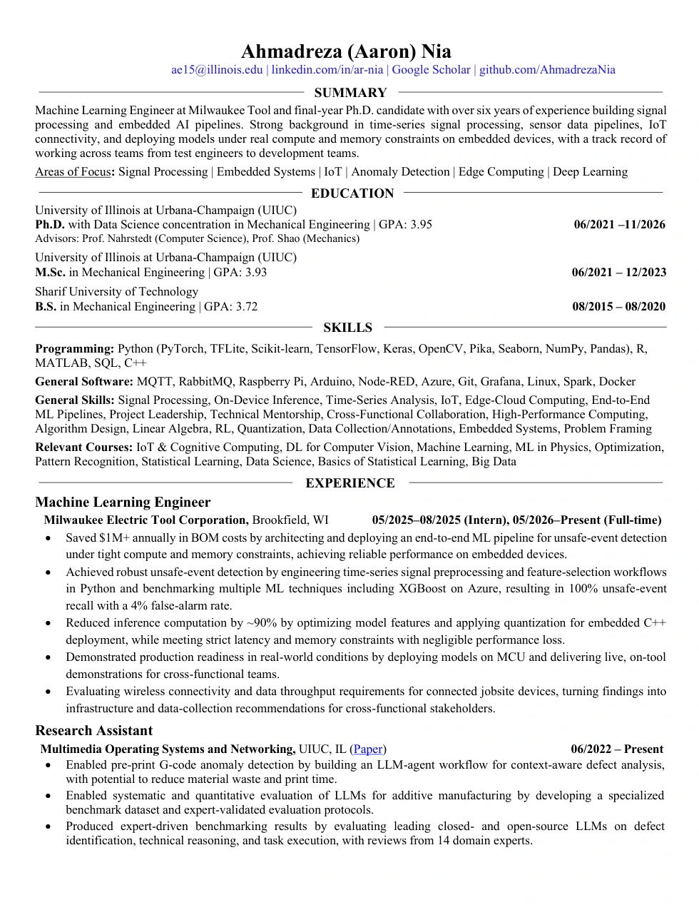
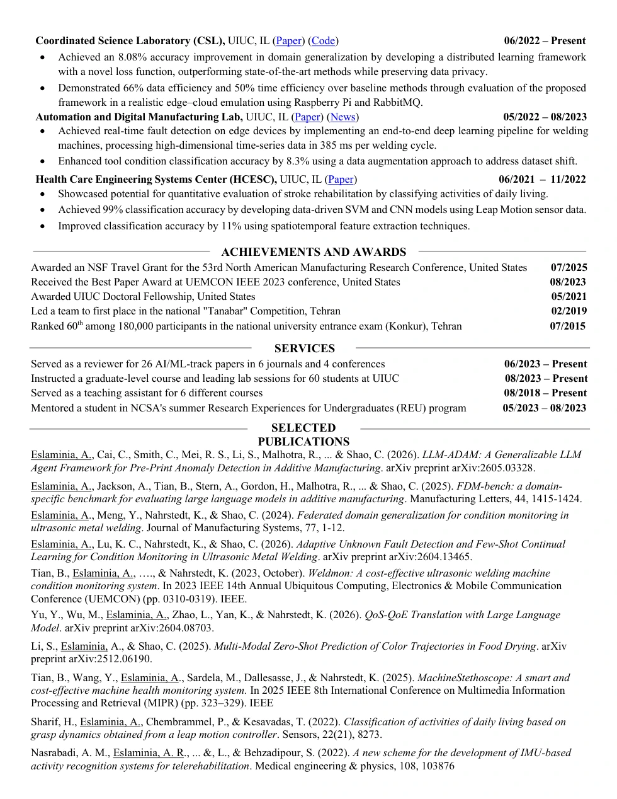

LLM-ADAM
LLM agents & tool use
An agent framework combining structured extraction, grounded references, and deterministic tools for evidence-based diagnosis.
87.5% accuracy across 200 evaluated programs
I build machine learning systems, from research to deployment.
I’m a Machine Learning Engineer at Milwaukee Tool and a final-year PhD candidate at the University of Illinois Urbana-Champaign. My work spans custom ML model development, continual and federated learning, LLM systems and evaluation, and efficient deployment.
I work across algorithm design, model evaluation, sensor and time-series data, and embedded inference, connecting research ideas with working systems.
At UIUC, I’m advised by Prof. Klara Nahrstedt (Computer Science, UIUC) and Prof. Chenhui Shao (Mechanical Engineering, University of Michigan).
My continual learning paper is accepted at CLEA, a NeurIPS 2026 workshop.
Our few-shot continual learning and anomaly detection work is published in Machine Learning: Engineering.
I joined Milwaukee Tool as a full-time Machine Learning Engineer, following my summer 2025 internship.
Released LLM-ADAM, an evidence-grounded LLM agent framework.
Our multimodal trajectory prediction preprint is available.
FDM-Bench is published in Manufacturing Letters, with a public benchmark.
Received an NSF Travel Grant for the 53rd North American Manufacturing Research Conference.
Illinois featured our WeldMon team and its Best Student Paper Award at IEEE UEMCON 2023.
Selected work
An agent framework combining structured extraction, grounded references, and deterministic tools for evidence-based diagnosis.
87.5% accuracy across 200 evaluated programs
An expert-reviewed benchmark testing language-model knowledge, reasoning, and program analysis against measurable outcomes.
14 domain experts · Public benchmark
Detecting unfamiliar classes and adapting a model from a few labeled examples while retaining existing knowledge.
Five-example adaptation · 9.2% of parameters updated
Distributed learning with shared representations and personalized models, evaluated on data from previously unseen domains.
5.35–8.08 percentage-point gains on unseen domains
Papers & preprints
CLEA · NeurIPS 2026 Workshop
Onboards a new site after a federation goes offline, using limited unlabeled data to discover unfamiliar classes and adapt the model while retaining existing knowledge.
Approach. Combines federated class-specific denoising autoencoders, reconstruction-based novelty detection, clustering, and selective classifier expansion. Compares local rehearsal, shared prototypes, and a combination of both.
Results. Evaluated on ultrasonic metal welding across five seeds. The dual-rehearsal variant achieves 88.9% mean accuracy on both old and new classes in the autonomous onboarding experiment. Results concern a controlled manufacturing study; prototype sharing and local rehearsal have different data-disclosure requirements.
Machine Learning: Engineering
Detects faults outside a model’s known classes, groups unfamiliar examples, and learns new fault classes from a small labeled sample.
Approach. Builds class-specific acceptance regions in a learned embedding, uses clustering to support labeling, and updates selected classifier layers while freezing most parameters.
Results. Reports 96% unknown-fault detection accuracy and up to 98% overall classification accuracy after a five-sample update in the single-new-class experiment. Only 9.2% of model parameters are trained during adaptation. The study assumes a consistent underlying process and sensor configuration.
arXiv
Turns machine instructions into evidence for defect diagnosis through specialized LLM agents and deterministic analysis.
Approach. An Extractor structures G-code parameters, a Reference agent grounds operating ranges in documentation, Python computes deviations, and a Judge diagnoses defects using the resulting evidence.
Results. The best configuration achieves 87.5% accuracy versus 59.5% for a single-LLM baseline on 200 G-code programs spanning two printers, two materials, and five classes. The reported results cover controlled program-level diagnosis.
arXiv
Builds a source-grounded dataset of multimedia quality relationships and evaluates LLMs that translate between network performance and perceived user experience.
Approach. Combines literature curation, structured relationship extraction, iterative evaluation, and supervised fine-tuning for bidirectional QoS–QoE prediction.
Results. Includes 1,026 relationship records and 8,107 derived chat instances. Evaluates continuous values and discrete labels, retaining source evidence and context for each relationship.
arXiv
Fuses initial images with process settings to predict full color-change trajectories under unseen drying conditions, without condition-specific fine-tuning.
Approach. Uses compact trajectory basis functions, image features, process parameters, and similarity-informed training-set selection.
Results. Validated on cookie and apple drying. For apples, the best multimodal configuration reaches RMSE 1.2865 versus 10.1517 for the reported baseline. Here, zero-shot refers to unseen combinations of drying conditions.
Manufacturing Letters
Benchmarks LLM manufacturing knowledge and G-code interpretation against expert-reviewed questions and real printing outcomes.
Approach. Pairs 16 G-code programs and four printing classes with 30 free-response and 75 multiple-choice questions at three expertise levels. Fourteen domain experts review the evaluation material.
Results. Compares GPT-4o, Claude 3.5 Sonnet, and Llama models to expose gaps between general language competence and manufacturing-specific reasoning. The benchmark and evaluation code are public.
IEEE MIPR
Uses inexpensive sensing and compression-based analysis to monitor equipment anomalies at the edge while reducing data storage and transmission.
Approach. Converts high-rate sensor signals to spectrogram sequences and uses video compression behavior to identify changes in temporal regularity.
Results. Evaluated on real laboratory vacuum pumps and controlled failure sequences. The study detects eight real pump anomaly events and reduces the size of transmitted data by over 90% in the evaluated setup.
Journal of Manufacturing Systems
Learns shared representations and personalized tasks across manufacturing sites, improving condition monitoring on unseen domains without pooling raw sensor data.
Approach. Combines a shared base model, task-specific upper layers, group-wise aggregation, and regularization. Includes an edge–cloud implementation with Raspberry Pi clients and RabbitMQ.
Results. Reports gains of 5.35–8.08 percentage points over the compared federated baselines on unseen-domain tasks. FTL-TP is the earlier preprint of this work.
IEEE UEMCON
Combines low-cost sensing, learned and engineered features, and data augmentation for autonomous welding-condition monitoring on a Raspberry Pi.
Approach. Uses an audio ADC for high-rate acquisition, converts multimodal signals to image-like inputs, and combines CNN features with signal features for classification.
Results. The evaluated system costs as little as $120. The hybrid pipeline averages approximately 385 ms per processing cycle on a Raspberry Pi 4; performance is evaluated across tool and surface-condition tasks.
Sensors
Recognizes daily-living activities using three-dimensional hand motion and grasp dynamics captured by a Leap Motion Controller.
Approach. Transforms hand coordinates to remove gross movement, normalizes geometric features, and compares support vector machines with convolutional classifiers.
Results. Studies eight activities in eight healthy participants with five-fold cross-validation. The best reported activity-detection CNN reaches 99.88% accuracy and 97.3% macro recall; patient evaluation remains future work.
Medical Engineering & Physics
Optimizes wearable sensor placement and signal features, then adapts activity-recognition models with a small amount of participant-specific data.
Approach. Uses genetic search over sensors and signals, time/frequency/wavelet features, dimensionality reduction, and several classifiers. Healthy-participant data support the initial design.
Results. Evaluates 34 activities using nine healthy participants and two participants with Parkinson’s disease. The small patient cohort supports a preliminary adaptation study.
IEEE ICRoM
Searches sensor configurations and signal features for efficient recognition of whole-body rehabilitation exercises, with adaptation for new users.
Approach. Uses genetic optimization over wearable IMU configurations and engineered signal features with a nearest-mean classifier.
Results. Evaluates 34 activities in nine healthy participants. The work establishes the sensor-selection and adaptation approach developed further in the 2022 journal article.
No publications match these filters.
Illinois MechSE · Research recognition
Coverage of our team’s IEEE UEMCON award and sensing research.
Open Access Government · Coauthored article
Our article on sensing infrastructure, scientific data integrity, and sustainable computing systems.
Industry & research
Developing ML models and sensor-data pipelines for power-tool systems, with an emphasis on on-device inference, compute and memory constraints, and connected-device data collection.
Worked on sensor-based event detection, combining time-series feature engineering, model evaluation, and embedded deployment with practical on-tool testing.
University of Illinois Urbana-Champaign
Developing federated and continual learning methods, expert-reviewed LLM benchmarks, and tool-using agent systems. Research spans model generalization, data-efficient adaptation, and edge–cloud implementation.
University of Illinois Urbana-Champaign
Developed an edge ML pipeline for ultrasonic welding condition monitoring, combining signal processing, learned features, and data augmentation to address dataset shift.
University of Illinois Urbana-Champaign
Built SVM and CNN activity-recognition models from hand-motion sensing and spatiotemporal features for daily-living and rehabilitation research.
Data Science concentration
Instruction & research mentorship
Graduate teaching assistant · UIUC
Led software-focused instruction and practical exercises for computer-aided manufacturing systems.
Graduate teaching assistant · UIUC
Led laboratory sessions and supported hands-on design learning for more than 60 students.
National Center for Supercomputing Applications · UIUC
Mentored an undergraduate student in NCSA’s summer Research Experiences for Undergraduates program.
The Future of Discovery: Training Students to Build and Apply Open Source Machine Learning Models and Tools.
Undergraduate instruction
Supported instruction, problem-solving, and student learning across six courses.
Honors & academic service
53rd North American Manufacturing Research Conference
IEEE UEMCON 2023
WeldMon: cost-effective ultrasonic welding condition monitoring
Illinois MechSE award coverageUniversity of Illinois Urbana-Champaign
Led a team to first place in the national student competition.
Professional background


Opportunities & collaboration
For applied ML opportunities, industry research, or collaboration, connect with me on LinkedIn.